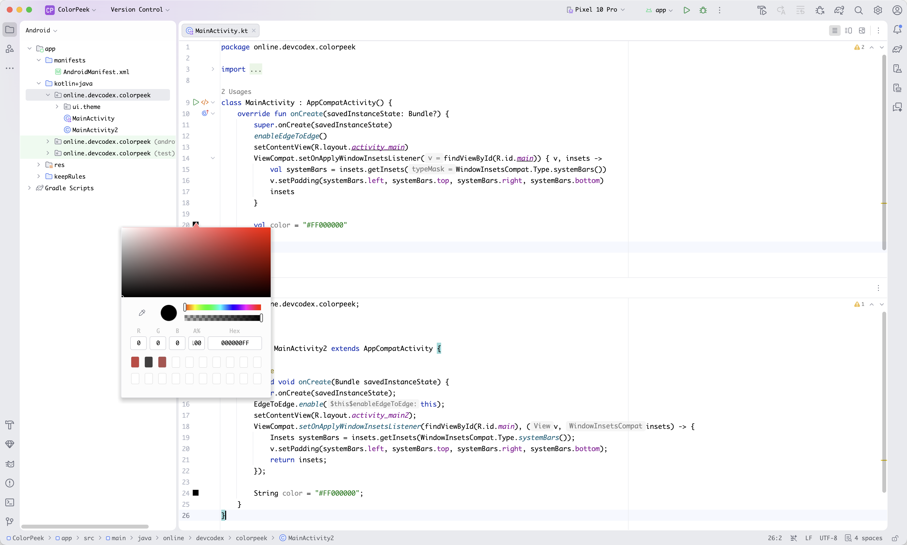

Instant preview
Color swatches appear beside supported Java and Kotlin string values without interrupting your code.
IntelliJ Platform plugin
ColorPeek brings the familiar Android Studio resource color experience to Java and Kotlin source code—right in the editor gutter.
Settings: Settings/Preferences → Tools → ColorPeek
Built for the editing flow
Recognized values receive an immediate gutter swatch. Click it, adjust the color, and ColorPeek writes the result back safely through PSI.

Focused and native
Color swatches appear beside supported Java and Kotlin string values without interrupting your code.
Use the IDE color picker and write the result back with source-aware PSI replacement.
Keep the original prefix, letter case, and compact/full representation wherever possible.
Enable Java and Kotlin independently from Settings/Preferences → Tools → ColorPeek.
Eight recognized forms
Both hash and hexadecimal prefixes are supported. Adding transparency automatically promotes RGB to ARGB so alpha is never discarded.
#RGB#ARGB#RRGGBB#AARRGGBB
0xRGB0xARGB0xRRGGBB0xAARRGGBB
Language-extensible by design
ColorPeek's provider architecture keeps language logic independent, making future support straightforward.
Broad IDE coverage
ModernIntelliJ Platform 242+Kotlin K1 and K2
LegacyIntelliJ Platform 232–241Older Android Studio releases
Open source under the MIT License.
Explore ColorPeek on GitHub